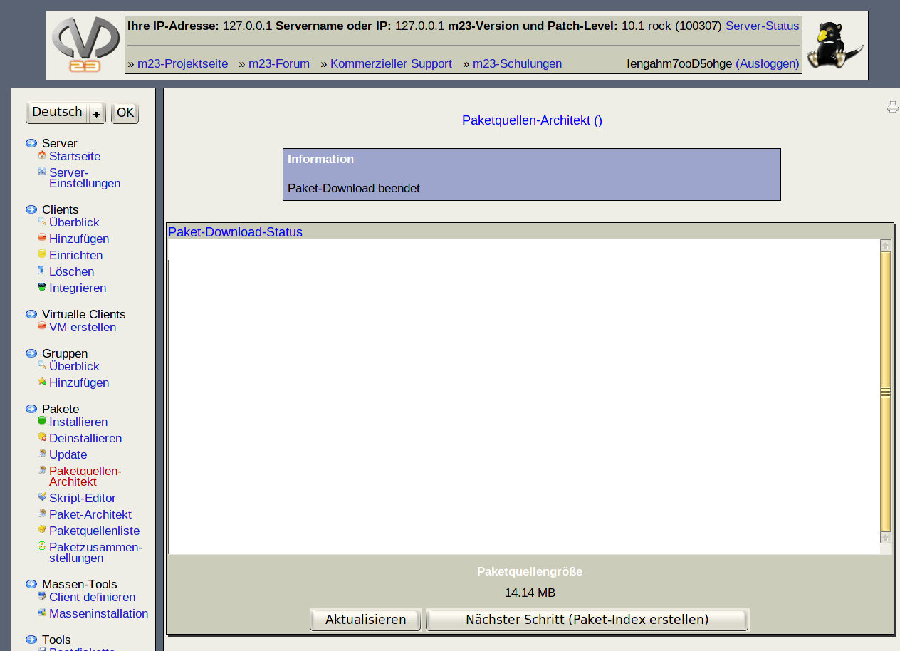

Im Fenster können Sie den aktuellen Download-Status verfolgen. Klicken Sie hin und wieder auf ''Aktualisieren'', um neue Informationen über den Download-Status zu erhalten (falls JavaScript deaktiviert ist). Läuft der Download oder ist der Download beendet, so wird dies im Informationsfenster angezeigt. Nach Abschluß des Downloads muß noch der Index angelegt werden. Dies erreichen Sie durch einen Klick auf ''Nächster Schritt (Paket-Index erstellen)'' (diese Option ist allerdings erst nach Abschluß des Downloads möglich).
root
2016-10-07